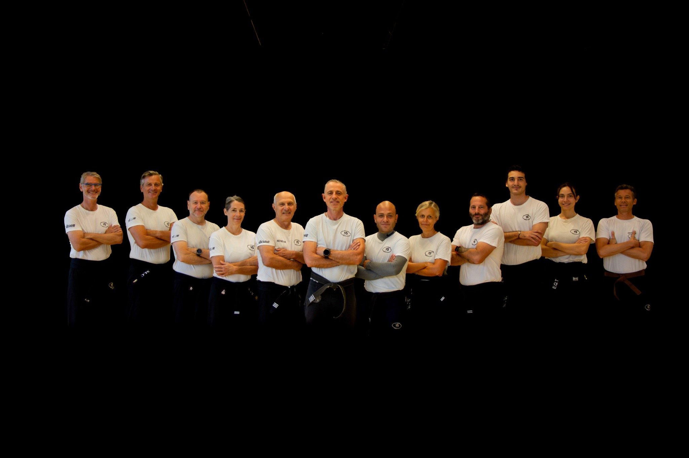

KM16 · Krav Maga · Paris 16e
Cours de Krav Maga pour adultes à Paris 16e
Vous souhaitez découvrir le Krav Maga ou poursuivre votre progression ? KM16 propose des cours pour adultes dans le 16e arrondissement de Paris, à Saint-Jean-de-Passy et au dojo Suchet.
Voir le planning adultes →
Débuter et progresser avec une équipe pédagogique
Les cours adultes associent travail technique, condition physique et mises en situation. L’apprentissage porte notamment sur la gestion de la distance, les déplacements et les réflexes de self-défense. La progression se construit au fil des séances avec les explications et les corrections des instructeurs.
La préparation aux ceintures fait également partie de la vie du club. Selon votre niveau et votre objectif, consultez les créneaux du planning et les stages annoncés dans l’app. Les séances de préparation avancée sont identifiées séparément des cours adultes tous niveaux.
Où ont lieu les cours ?
KM16 utilise deux lieux de pratique : Saint-Jean-de-Passy, au 72 rue Raynouard, et le dojo Suchet, au 1 square Henry-Bataille. Les deux se trouvent dans le 16e arrondissement. Le lieu dépend du créneau : vérifiez le planning avant de vous déplacer.
Retrouver les adresses et les itinéraires des dojos.
Préparer votre première séance
Si vous découvrez le club, renseignez-vous sur le cours d’essai et le créneau correspondant à votre situation. L’équipe peut vous aider à choisir une séance et vous préciser les équipements à apporter.
Les tarifs, formules et conditions sont indiqués dans les parcours d’adhésion de KM16. Consultez les informations affichées avant de valider votre inscription.
Questions pratiques
Où consulter les horaires adultes ?
Ouvrez le planning de l’app et choisissez la catégorie adultes qui correspond à votre niveau. Les horaires et les lieux peuvent varier d’un créneau à l’autre.
Comment découvrir le club avant une adhésion ?
Consultez la page du cours d’essai, puis contactez KM16 pour confirmer les modalités de votre venue.
Votre prochaine étape chez KM16
Consulter le planning · Voir les tarifs · Accéder aux inscriptions
Une question ? 07 62 01 32 94 · contact@km16.fr